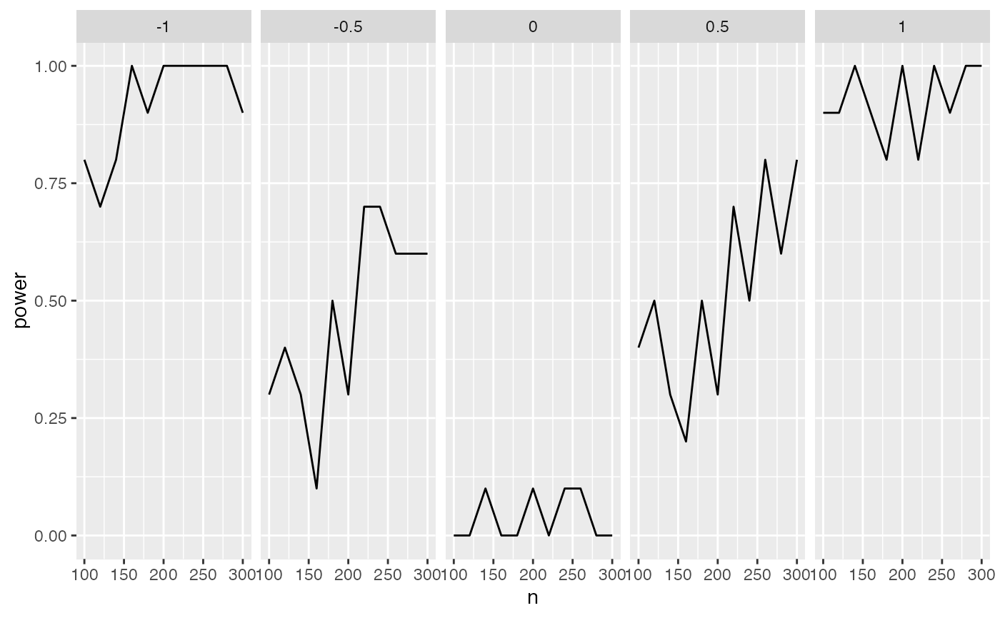

R/tidy_fits.R
tidy_fits.RdTurn fitted model of simulated data (from
fit) into a tidy tibble of model
components (via
generics::tidy).
tidy_fits(obj, ..., .progress = FALSE, .options = furrr_options())
| obj | tibble with repetition number,
metaparameters, simulated data, and fitted
models, from |
|---|---|
| ... | Additional arguments to |
| .progress | A logical, for whether or not to print a progress bar for multiprocess, multisession, and multicore plans . |
| .options | The |
a tibble with the output of the
generics::tidy method
for the given object.
This is part of the fifth step of the
simulation process: after fitting the model
with fit, now tidy the model
output for further analysis such as evaluating
power. All model objects should be supported
by generics::tidy,
primarily via the broom package.
The output of this function is quite useful for
calculating things such as power for specific
tests within an overall model; see
Examples. For looking at overall
features of the model such as R-squared, use
glance_fits.
glance_fits to view
overall model statistics (e.g. R-squared),
apply_fits to apply an
arbitrary function to the fits
simple_linear_data = specify(a = ~ 2 + rnorm(n), b = ~ 5 + 3 * x1 + rnorm(n, 0, sd = 0.5)) %>% define(n = 100:101) %>% generate(2)#> Warning: Simulation produced errors. See column '.sim_error'.## Can show tidy output for multiple competing models, compare_degree = simple_linear_data %>% fit(linear = ~lm(a ~ b, data = .), quadratic = ~lm(a ~ b + I(b^2), data = .)) %>% tidy_fits#> Warning: fit() produced errors. See '.fit_error_*' column(s).## Models can be of different types -- anything supported by broom::tidy. cor_vs_lm = simple_linear_data %>% fit(linear = ~lm(a ~ b, data = .), cor = ~ cor.test(.$a, .$b)) %>% tidy_fits#> Warning: fit() produced errors. See '.fit_error_*' column(s).cor_vs_lm # has NA for non-matching terms#> # A tibble: 8 × 6 #> .sim_id n rep .sim_error Source .fit_error #> <int> <int> <int> <chr> <chr> <chr> #> 1 1 100 1 "Error in eval_fun():… linear "Error in eval(predvars, da… #> 2 1 100 1 "Error in eval_fun():… cor "Error in cor.test.default(… #> 3 2 101 1 "Error in eval_fun():… linear "Error in eval(predvars, da… #> 4 2 101 1 "Error in eval_fun():… cor "Error in cor.test.default(… #> 5 3 100 2 "Error in eval_fun():… linear "Error in eval(predvars, da… #> 6 3 100 2 "Error in eval_fun():… cor "Error in cor.test.default(… #> 7 4 101 2 "Error in eval_fun():… linear "Error in eval(predvars, da… #> 8 4 101 2 "Error in eval_fun():… cor "Error in cor.test.default(…## Example power analysis to detect an interaction (g1) # \donttest{ set.seed(100) simpr_tidy = ## Specify the simulation specify(a = ~ 2 + rnorm(n), b = ~ 3 + 2*a + rnorm(n, 0, sd = 0.5), c = ~ 5 + a + b + g1*a*b + 10 * rnorm(n)) %>% define(n = seq(100, 300, by = 20), g1 = seq(-1, 1, by = 0.5)) %>% ## Generate the data generate(10) %>% ## Fit models fit(lm = ~lm(c ~ a*b, data = .)) %>% ## Calculate the output tidy_fits ## Now we can easily calculate and plot power library(dplyr) library(ggplot2) simpr_tidy %>% filter(term %in% "a:b") %>% group_by(n, g1) %>% summarize(power = mean(p.value < 0.05)) %>% ggplot(aes(n, power)) + geom_line() + facet_grid(~g1)#># }